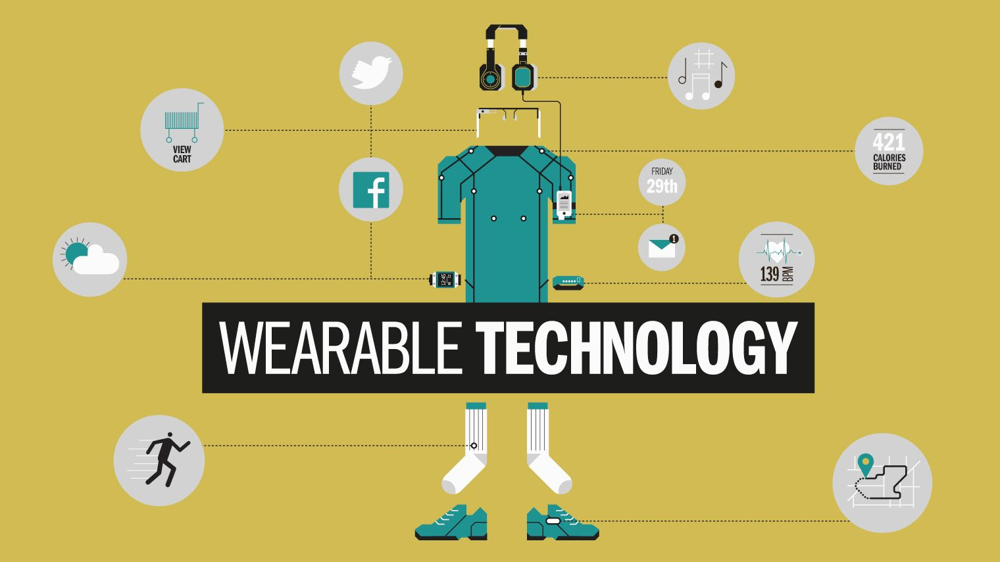

Trust.me ID Provider
Enabling services based on calculating User Specific Trust Levels.

| directions_run |
Unique Metrics for User ActivitiesAnalyzing your everyday activities, e.g. how you pick up your phone, handle your touch screen or walk |
| autorenew |
Detect routines and identify deviationsBy analyzing schedules, your trust level can be increased by certain locations, wifi-hotspots or activities. |
| face |
Face and Speech RecognitionIncrease your trust level by simply using face and speech recognition. Using Microsoft Cognitive, your personal account will be used to identify yourself. |